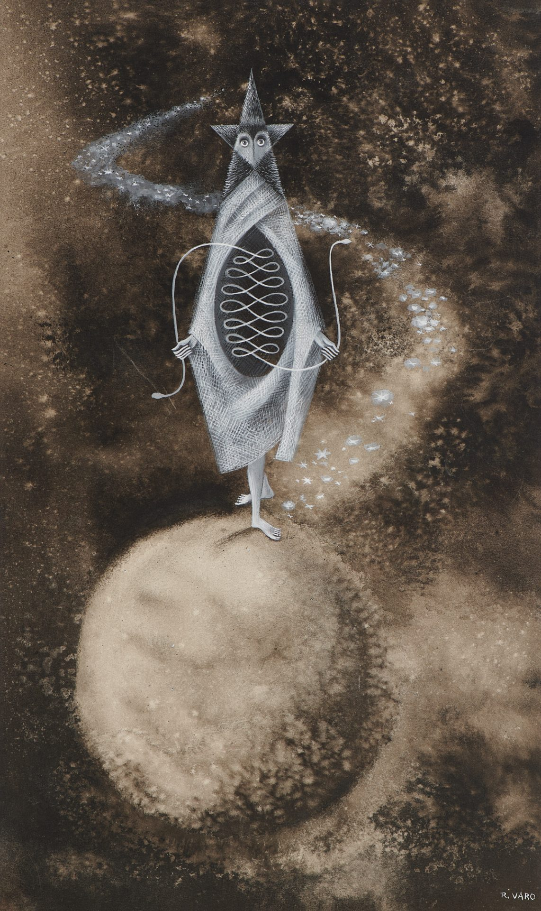
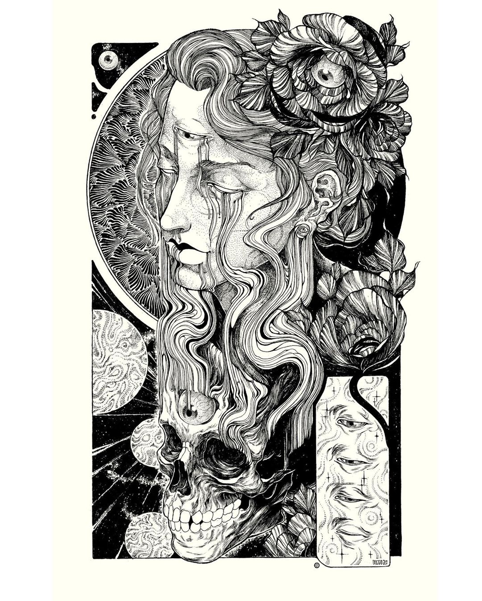
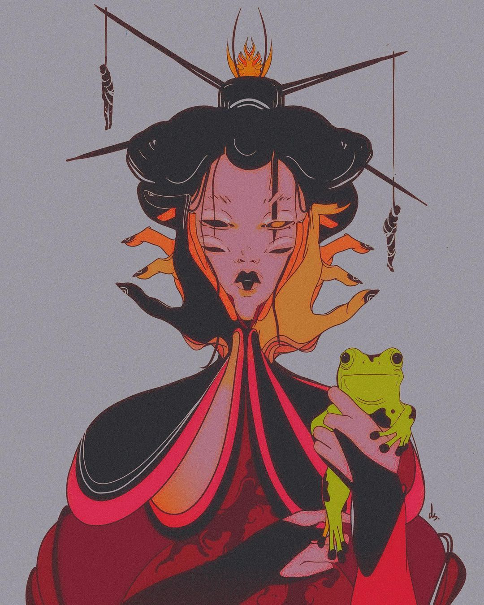
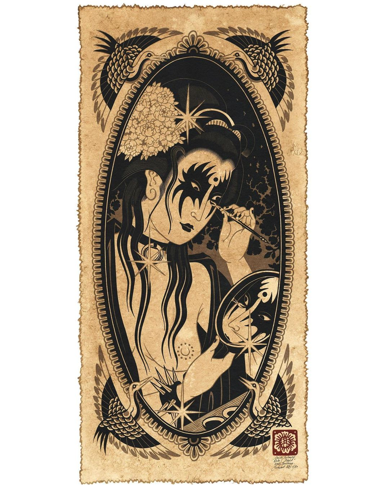

| Influencias |
Arte |
Descripcion |
|  |
Remedios Varo.
- Caracteristica de Obra
- Enfoque sobre lo científico, místico, esotérico y mágico
- Ocupacion
- Pintora, escultora y dibujante
|
|  |
DiegoAndradeart.
- Caracteristica de Obra
- Enfoque en Calidad de Lineart, Composicion y Color
- Ocupacion
- Dibujante, Pintor
|
|  |
dead_seagull_.
- Caracteristica de Obra
- Enfoque En la Anatomia y su deconstruccion, diseño de Pesonajes y un manejo increible del color,
- Ocupacion
- Dibujante
|
|  |
emils.salmins.
- Caracteristica de Obra
- Enfoque artistico inspirado en obras antiguas japonesas y el arte old school
- Ocupacion
- Dibujante, Grabador(linoleo) y Tatuador
|